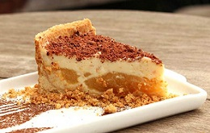

Culianaria Tipica de Rondônia
O estado de Rondônia é caracterizado por sua grande mistura cultural, não só por conta de sua localização, mas também graças aos migrantes que vieram de praticamente todas as regiões do Brasil para povoar a área. Obviamente essa teia cultural é bastante refletida na gastronomia, na mistura do gosto mais temperado do Nordeste com os ingredientes e modos de preparo tradicionais do Norte, e até mesmo algumas pitadas do Sul e Sudeste. O peixe é muito usado nos pratos locais, uma vez que o estado possui diversos rios e uma grande variedade de pescados.
Torta de Cupuaçu
Algumas frutas típicas da região são bastante usadas em receitas de tortas e outros tipos de sobremesa. O cupuaçu é uma delas. A fruta é parente próxima do cacau, e por conta disso seu gosto muitas vezes se assemelha ao do chocolate. Além de tortas, o cupuaçu pode ser usado para fazer bombons e até mesmo receitas de sabor azedo.
Ingredientes
1 kg de polpa de cupuaçú
3 latas de leite condensado
2 latas de creme de leite
500 g de açúcar
4 colheres de chocolate em pó
Modo de Preparo
Pegue as 500 g da polpa do cupuaçu, bata no liquidificador com as 2 latas de leite condensado e 1 lata de creme de leite.
Reserve o creme.
Em uma panela coloque a outra metade da polpa do cupuaçú com 500 g de açúcar e leve ao fogo mexendo até virar uma calda tipo caramelo.
Reserve.
Pegue 1 lata de leite condensado mais as 4 colheres de chocolate em pó e leve ao fogo até ferver.
Reserve.
Em um refratário monte a torta da seguinte maneira.
Forre o refratário com o creme do cupuaçú, depois uma camada do doce do cupuaçú e em seguida o doce de chocolate.
Intercale assim em camadas finalizando com o creme do cupuaçú e leve para gelar.
Sirva gelado.
Redes Sociais